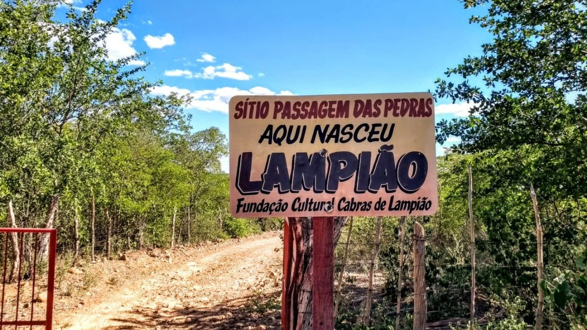
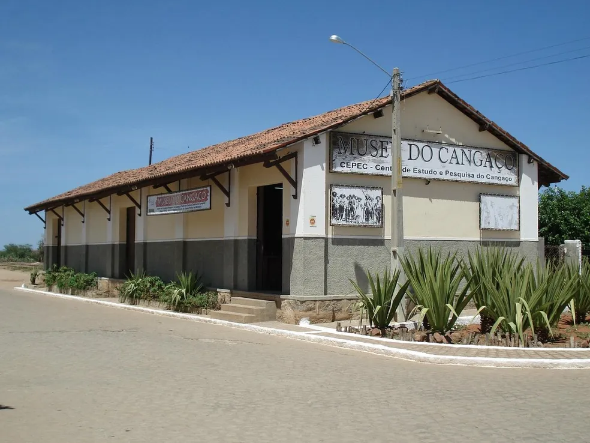
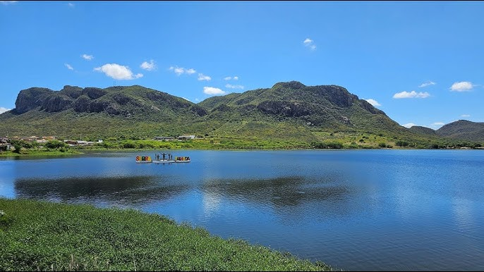

Sítio Passagem das Pedras
Local onde nasceu o famoso cangaceiro Lampião, figura central da história nordestina.
Museu do Cangaço
Centro de Estudos e Pesquisas do Cangaço, ideal para conhecer a história da região.
Serrote da Ponta da Serra
Cartão-postal natural da cidade, ótimo para passeios e contemplação da paisagem.